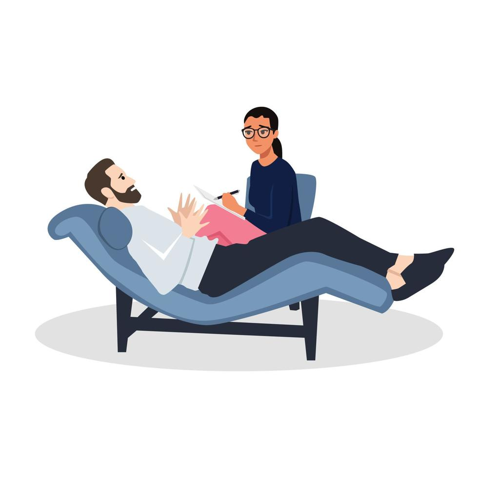

Psicóloga clínica
Dra. Marina Alves
Atendimento para ansiedade, autoestima e desenvolvimento pessoal.
Entrar em contato
Nossa equipe
Encontre especialistas com diferentes experiências para cuidar da ansiedade, do estresse e do burnout com escuta e responsabilidade.
Os perfis abaixo são ilustrativos e servem para apresentar a experiência da plataforma.
Psicóloga clínica
Atendimento para ansiedade, autoestima e desenvolvimento pessoal.
Entrar em contatoPsicólogo e terapeuta
Foco em estresse profissional, burnout e equilíbrio no trabalho.
Entrar em contato
Psicóloga para adultos
Acompanhamento de relacionamentos, luto e mudanças de vida.
Entrar em contatoPsicólogo corporativo
Programas de saúde mental e prevenção para equipes e empresas.
Entrar em contato